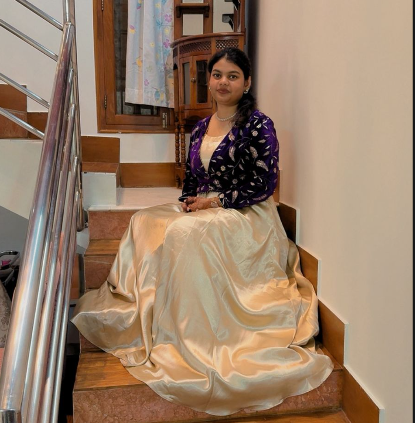

Mariam Farheen Saif
Information Science & Engineering Student
I am a third-year Information Science & Engineering student at ATRIA INSTITUTE OF TECHNOLOGY focused on building strong programming and development skills. I am currently learning full-stack development and working towards building real-world projects. I have completed certifications in Python and Java, and I am also currently learning data structures, algorithms, and database management systems. I am deeply interested in cloud computingand want to understand how applications are built, deployed, and scaled dynamically. Open to learning opportunities, technical communities, and strategic engineering collaborations.
📑 My Resume
Comprehensive overview of my professional experience, academic background, and technical certifications. Click the button to view the full PDF version.
🏫 Education & Community Engagement
Information Science & Engineering
Third-Year Core Focus. Specializing in data modeling paradigms, computational frameworks, and software system scalability.
Crowd Engagement Coordinator
AWS Student Builder GroupDriving open cloud awareness, engineering hackathons, student tech integration, and scaling internal group ecosystem interaction loops.
🛠️ Structural Skills & Credentials
Core Execution
Web Systems & Infrastructure
Architectural Domain Learning
</> Featured Engineering Showcases
VisioSense: Smart AI Glasses for the Visually Impaired
Built on the foundational belief that everyone deserves equal accessibility and autonomy in daily life, VisioSense is a comprehensive assistive wearable designed to accurately map the parameters of physical environments for visually impaired and partially sighted individuals. Built and tested across 4 core engineering phases:
Sudoku Solver
PythonAn algorithmic calculation engine built to solve complex Sudoku puzzles. Utilizes specialized Backtracking Algorithms to test values through systematic constraint verification, finding absolute puzzle solutions with high execution efficiency.
Rock Paper Scissors Engine
PythonAn interactive computational program modeling game rules through structured conditional architecture. Employs integrated computer-generated choice modules to play against human input loops seamlessly.
DevMatch: Project Blueprint Generator
Web ApplicationA minimalist, single-page web application designed to eliminate decision paralysis for software engineering students and self-taught developers. DevMatch provides a streamlined interface where users select their experience tier and instantly generate a curated, structured project blueprint aligned with their current skill level.